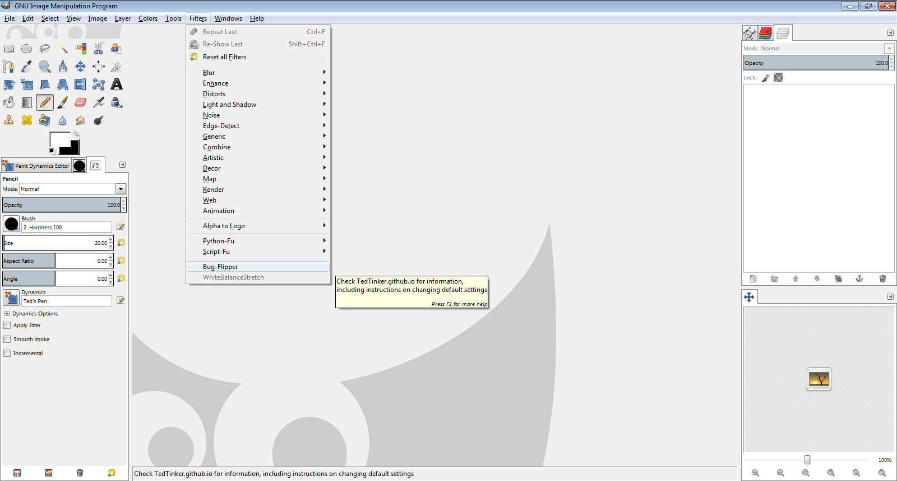
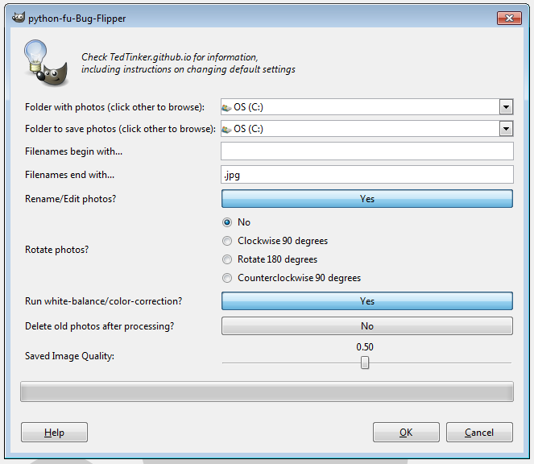

BugFlipper

A GIMP plug-in for human-assisted image-processing
Using BugFlipper
First, collect the photos which must be processed in one folder. Also decide on a folder into which you would like to save the processed images.
Then open the GIMP. If all the components have been installed correctly, Bug-Flipper will appear in the GIMP’s drop-down menu labeled Filter, as shown below.

With no images open in the GIMP, select Bug-Flipper from the Filter drop-down. This should open the following dialog box prompting the user for several options. Move this dialog box to the left side of the screen; after clicking "OK", this dialog box cannot be moved and may cover another window.

The options are as follows; click Customizing BugFlipper for instructions on changing the defaults:
- “Folder with photos”: Choose the folder containing the photos to process. The default is the C drive. To choose another folder, select “other” from the drop-down.
- “Folder to save photos”: Choose the folder into which the photos should be saved. The default is the C drive. To choose another folder, select “other” from the drop-down.
- “Filenames begin with…”: Type a string. Photos in the the first folder will be processed only if their filename begins with that string. This is empty by default. Case-sensative.
- “Filenames end with…”: Type a string. Photos in the the first folder will be processed only if their filename ends with that string. The default is “.jpg”. Case-sensative.
- “Rename/Edit photos?”: Select “yes” or “no.” The default is “yes”.
- If run using “yes,” each image will be processed and then displayed in the GIMP one at a time. The user may then edit the photo (for example, cropping it by hand). As the image is displayed a dialog box appears asking for a filename. When the user clicks the button labeled “Enter” in the dialog box, or types the enter key while typing in the filename entry-box, the display is removed and the image is saved with the filename given. Leave the entry-box empty to save using the old filename instead of a new one. Below the entry-box the user may mark a checkbox to flag the photograph as of poor quality; then the string “bad_pic_” will be appended to the filename returned. (In the case of Cheadle Hall entomology, each photograph contains a QR code. After cropping, the user may click in the filename-entry-box and scan the QR code to automatically save the photo with the proper name and move to the next image. This may not work if the monitor is low-resolution or low-contrast. See Troubleshooting for details.)
- If run using “no,” the images are processed but not displayed. No human input is needed.
- “Rotate Photos?”: Select whether each photo should be rotated 90 degrees, 180 degrees, 270 degrees, or not at all. The default is no rotation at all.
- “Run white-balance/color-correction?”: Select “yes” or “no.” The default is “yes.” The white-balance and color-correction plug-in was written by Diego Nassetti.
- “Delete old photos after processing?”: Select “yes” or “no.” The default is “no.” If the plug-in is run using “yes,” each old image is deleted when its processed image is saved. (Never use "yes" when pulling photos from and saving to the same folder without renaming; each saved file will replace the original, and then it will be deleted.)
- “Saved Image Quality”: Use the slider-bar to choose a number between .01 and 1. The default is .5. Using 1 saves the image without compressing it. Using .01 saves the image with maximum compression (most detail is lost, but large, high-contrast writing may be legible). Using .5 saves the image with some compression.
When these options have been set, click the Enter button to run the plug-in. It may take a moment for each image to be displayed, especially if the photographs are high-resolution.
Because each image is processed and saved one at a time, the program may be terminated at any moment by closing the GIMP; ignore error messages which may result.